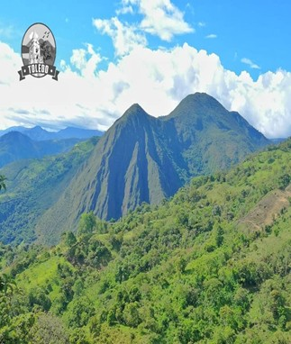
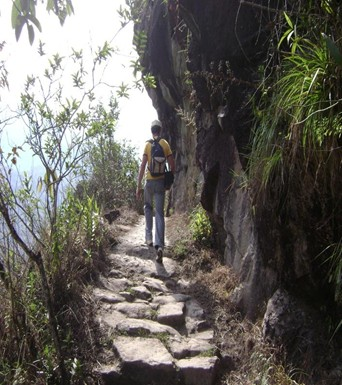
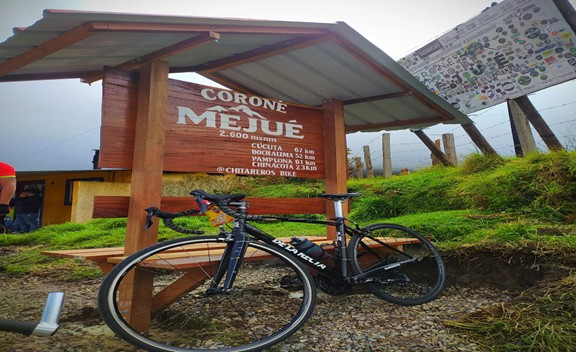
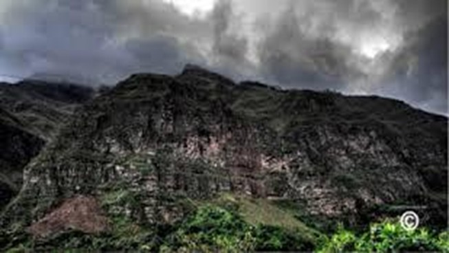
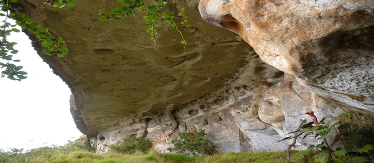
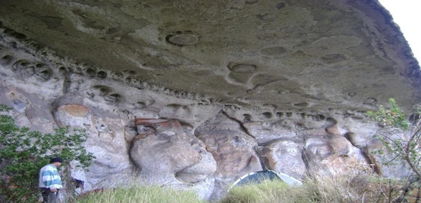

LA PEÑA DE LOS MICOS Y SU SENDERO
La Peña de los Micos es uno de los atractivos ecoturísticos representativos del municipio de Toledo Norte de Santander se encuentra ubicada específicamente en la vereda Mirlando.
Este sitio es ideal para los amantes de la aventura y el contacto con la naturaleza, destacándose por sus paisajes montañosos y su biodiversidad.
Un sendero aproximado de 2 km fue construido en la década de 1930 cuando pasaban los presos de Tunja este sendero comunica corregimiento de San Bernardo con las veredas del Margua, el Vegón, Ceibal, Santa Barbara, Belén, La Aurora, Santa Catalina y San Alberto era un corredor para llegar al corregimiento de Samore.


CARACTERÍSTICAS PRINCIPALES
ACTIVIDADES: Es un destino popular para el senderismo, el paisajismo y el ecoturismo en general.
ENTORNO: Forma parte de la riqueza hídrica y natural de la región, cercana a otros puntos de interés como el Parque Binacional Natural Tamá.
RECOMENDACIONES: Para llegar a este tipo de lugares en la zona rural de Toledo, se recomienda contratar un guía local, llevar ropa cómoda, hidratación y alimentos energéticos.
ACTIVIDADES: Es un destino popular para el senderismo, el paisajismo y el ecoturismo en general.
ENTORNO: Forma parte de la riqueza hídrica y natural de la región, cercana a otros puntos de interés como el Parque Binacional Natural Tamá.
RECOMENDACIONES: Para llegar a este tipo de lugares en la zona rural de Toledo, se recomienda contratar un guía local, llevar ropa cómoda, hidratación y alimentos energéticos.
PÁRAMO DEL MEJUÉ
El Páramo de Mejué es un ecosistema estratégico de bosque de niebla y subpáramo situado en los Andes orientales, compartido principalmente por los municipios de Toledo y Chinácota en Norte de Santander. Con una extensión de más de 10,700 hectáreas, este "santuario de vida" es vital para la región al ser el lugar de nacimiento de la quebrada Iscalá, que alimenta al río Pamplonita.

Alcanza alturas de hasta 3,203 msnm. Actualmente (abril de 2026), el clima es predominantemente nublado con lluvias ligeras, con temperaturas que oscilan entre los 12°C y 18°C.
LA PEÑA DEL VENADO

Sitios turísticos concurridos es la peña de los venados, un cerro de gran tamaño, pura roca que es atravesado por un camino de herradura con altura, del camino hasta el rio Margua, de unos 300 metros en caída libre, camino angosto y construido hace más o menos 80 años, cuando los colonizadores del Sarare, mostraron interés por esa rica Región, sin duda es una obra de arte para el turismo extremo. Ubicada a 5 minutos de San Bernardo vía Santa Bárbara.
LA CUEVA DE LAS GOLONDRINAS


La Cueva de las Golondrinas, en las profundidades del páramo Santa Isabel, en el Parque Nacional Natural Tamá. Estas fotografías muestran la inmensidad del área estratégica, a la que se accede luego de dos días de camino en el mismo se puede acampar.
En donde existe avistamiento de tigre y oso de ante ojos entre otros.